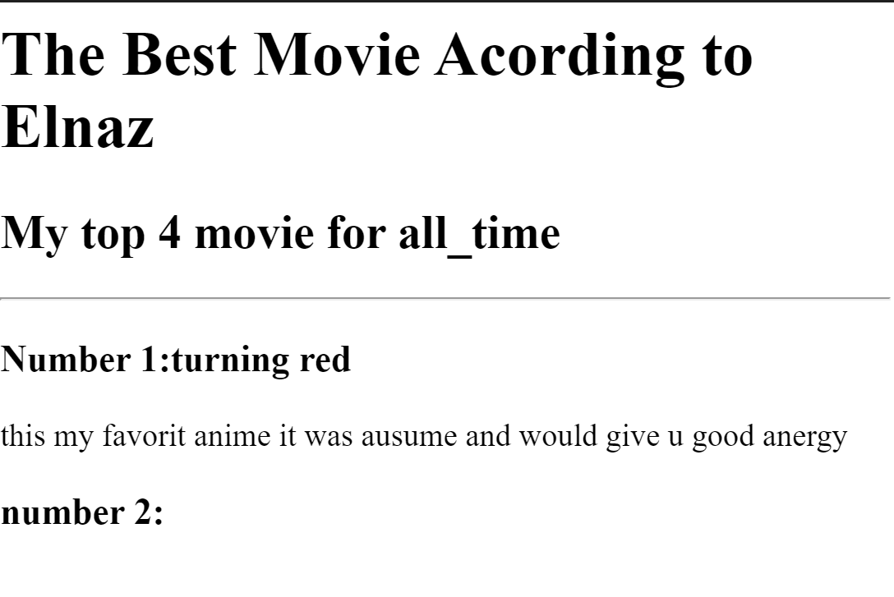

<!-- TODO 1: Create the HTML Boilerplate -->
<h1>It Is Elnaz Portfoy</h1>
<h2>Iam A Web Developer</h2>
<!-- TODO 2: Add Your previous projects' HTML into the public folder -->
<h2><a href="./public/./mymovie.html">this is my movie project</a></h2>
<br/>


<!-- TODO 3: Take screenshots of your project previews and add the images to the images folder -->

<!-- TODO 4: Add titles/subtitles etc. -->
<a href="./public/mybirthdayparty.html"><h2>and this is my birthday project</h2></a>

<!-- TODO 5: Add a link to the project pages -->

<!-- TODO 6: Add images to show the project previews
HINT for TODO 6: You can use the height attribute set to 200 to make the image smaller:
https://developer.mozilla.org/en-US/docs/Web/HTML/Element/img#attr-height -->
<h3><a href="./public/contact.html">and  how to contant me</a></h3>
<!-- TODO 7: Add the Contact Me and About Me page links -->